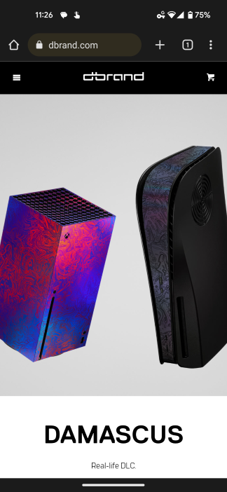
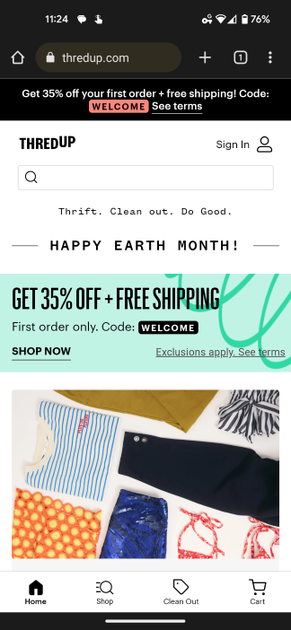
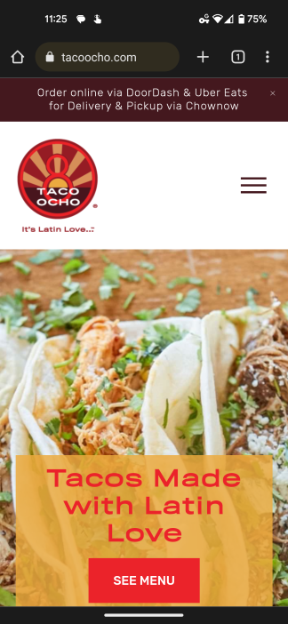

Visual Hierarchy
dbrand
Not every site can pull off a hero image that takes up everything above the fold, but for dbrand®, high impact imagery is the product.
Featuring the highly recognizable Xbox Series X and Playstation 5 consoles, even without knowing what dbrand® sells, you can intuit this site will be a great place to customize your electronics.
By leading with an intriguing image, dbrand® assures you know what they sell and how unique it is.
Unfortunately, the name and tagline for the featured skin takes up the rest of above-the-fold space. If they had overlaid these elements onto the picture, they could have leveraged the principle of visual hierarchy to introduce the next most important idea without their customer having to scroll.
White Space
ThredUP
While this site contains a lot of information in a small screen, it delivers it all without feeling crowded or illegible.
Notice the top bar of the site has the logo, sign in link, search bar, tag line, and a holiday message. It would be easy for that to be overwhelming, but because it is all on the same background color and has significant padding around each element, it feels clean.
Visual interest is added by following the expanse of white with a colorful ad which bleeds all the way to the edge of the page. There is no white space.
Finally, another large image is presented, this time with a border of white space. This helps to differentiate the image from the ad above and create a dynamic, thoughtful feel for the page.
Contrast
Taco Ocho
Taco Ocho's website has both strengths and weaknesses. The color scheme is punchy and exciting with maroon, orange, and bright red coming together in a vibrant sunset.
The colors fail to deliver on the call to action, however, as the bright red text does not contrast enough against the orange background. Using white for the text would have helped the strong white banner across the top feel more cohesive and would have helped the "See Menu" button stand out more. It would also increase accessibility.